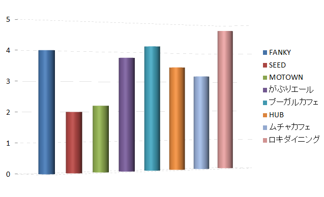

第一位！！！
第一位：ロキダイニング
とにかく近い！わかりやすい！！
立地面では断トツの評価となりました。しかし、男性のみでの入店は勇気が必要かと思われます！！
第二位！！！
第二位：ブーガルーカフェ
駅からほぼ迷う事無く目的地まで着くこと「は！」出来ます！しかし、外見が普通の民家の為、他の目印が必要です。また最初は入りづらいかもしれません！
第三位！！!
第三位：FUNKY原田
またまた入賞！！もう止める事は出来ません！！駅から直線一本道！しかし、上位に比べやや遠いのでこの順位となりました！
まとめ！！！
調査した全店舗のコストパフォーマンス別グラフ
